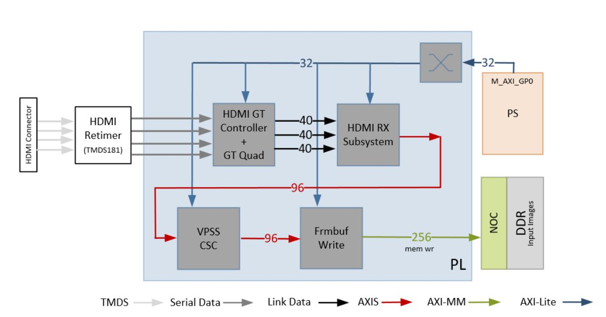
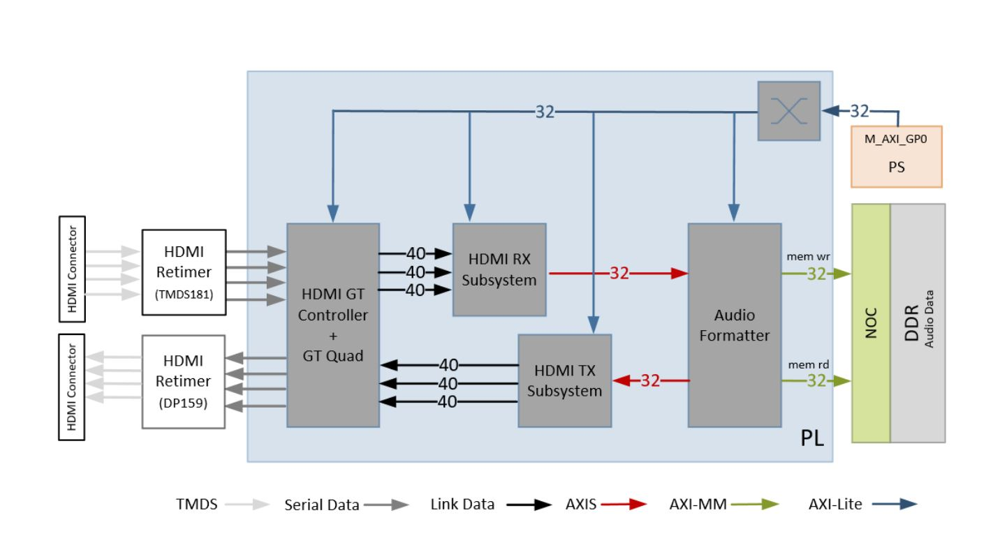

5.2. Hardware Architecture of the Platform¶
This chapter describes the targeted reference design (TRD) hardware architecture. The following figure shows a block diagram of the design components inside the Versal ACAP on the VCK190 board. See VCK190 Evaluation Board User Guide (UG1366) for more information.
{kind=link}
At a high level, the design comprises three pipelines:
Capture/input pipeline:
- USB capture pipeline (PS)
- Single or quad MIPI CSI-2 Rx capture pipeline (FMC + PL)
- HDMI RX video and audio capture pipeline
Processing Pipeline:
- Video processing accelerator funtions
Display/Output Pipeline:
- HDMI TX display pipeline
- HDMI RX audio pipeline
The block diagram comprises of two parts: platforms and accelerators.
Platforms:
This mainly consist of I/O interfaces and their data motion network. This is the fixed part of the design. Platforms supported in this reference design:
- Platform 1: Single sensor MIPI CSI-2 Rx (capture), USB-UVC (capture), HDMI Tx (display)
- Platform 2: Quad sensor MIPI CSI-2 Rx (capture), USB-UVC (capture), HDMI Tx (display)
- Platform 3: HDMI Rx (capture), USB-UVC (capture), HDMI Tx (display)
Accelerators:
This is a block which can perform different video processing functions from Computer Vision or Machine learning. This is the variable part of the design. The accelerator and corresponding data/control interfaces (AXI-MM, AXI-Lite, interrupts) are generated by the Vitis tool and is integrated into the platform.
5.2.1. Capture Pipeline¶
5.2.1.1. Single Sensor MIPI Capture¶
A capture pipeline receives frames from an external source and writes it into memory. The single sensor MIPI CSI-2 receiver capture pipeline is shown in the following figure.
{kind=link}
This pipeline consists of five components, of which four are controlled by the APU via an AXI-Lite based register interface; one is controlled by the APU via an I2C register interface.
- The Sony IMX274 is a 1/2.5 inch CMOS digital image sensor with an active imaging pixel array of 3864H x2196V. The image sensor is controlled via an I2C interface using an AXI I2C controller in the PL. It is mounted on a FMC daughter card and has a MIPI output interface that is connected to the MIPI CSI-2 RX subsystem inside the PL. For more information refer to the LI-IMX274MIPI-FMC_datasheet.
- The MIPI CSI-2 receiver subsystem (CSI Rx) includes a MIPI D-PHY core that connects four data lanes and one clock lane to the sensor on the FMC card. It implements a CSI-2 receive interface according to the MIPI CSI-2 standard v2.0 with underlying MIPI D-PHY standard v1.2. The subsystem captures images from the IMX274 sensor in RAW10 format and outputs AXI4-Stream video data. For more information see the MIPI CSI-2 Receiver Subsystem Product Guide (PG232).
- The Image Single Processing IP is available in the Vitis Vision librarires (https://github.com/Xilinx/Vitis_Libraries/tree/master/vision/L1).The IP receives the RAW10 AXI4-Stream input data and interpolates the missing color components for every pixel to generate a 24-bit, 8 bits per pixel (8 bpc) RGB output image transported via AXI4-Stream. At 4 ppc, the AXIS width is 96-bit. A GPIO from the PS is used to reset the IP between resolution changes. For information on the functions it implments refer to Vitis Vision Libraries Image Sensor Processing pipeline.
- The video processing subsystem (VPSS), see Video Processing Subsystem Product Guide (PG231), is a collection of video processing IP subcores. This instance uses the scaler only configuration which provides scaling, color space conversion, and chroma resampling functionality. The VPSS takes AXI4-Stream input data in 24-bit RGB format and converts it to a 16-bit, 8bpc YUV 4:2:2 output format. The following figure shows AXIS data interface at 4ppc. A GPIO pin from the PS is used to reset the subsystem between resolution changes.

- The video frame buffer, see Video Frame Buffer Read and Video Frame Buffer Write LogiCORE IP Product Guide (PG278) takes YUV 4:2:2 sub-sampled AXI4-Stream input data and converts it to AXI4-MM format which is written to memory as 16-bit packed YUYV. The AXI-MM interface is connected to the system DDR via NOC. For each video frame transfer, an interrupt is generated. A GPIO is used to reset the IP between resolution changes.
All the IPs in this pipeline are configured to transport 4ppc @ 150 MHz, enabling up to 3840x2160 resolution at 60 frames per second (fps).
- Time to transfer one frame: (3840 + 560) x (2160 + 90) / (150 MHz * 4ppc) = 0.0165 ms
- Number of frames transferred per second = 1/0.0165 = 60 frames
Note: In this calculation the vertical blanking accounts for 90 pixels per line and the horizontal blanking for 560 lines per video frame.
The video resolution, frame format and frame rate are set via register writes through the AXI-Lite interface of the IPs at run-time. The drivers for the above blocks provide APIs to set these values in a user application.
- For the pass-through design (no accelerator) user can choose between 720p60, 1080p60, 2160p30, and 2160p60.
5.2.1.2. Quad Sensor MIPI Capture¶
The quad sensor MIPI CSI-2 receiver capture pipeline is shown in the following figure.
{kind=link}
- The Avnet Multicamera FMC module bundles fours ON Semi image sensors (AR0231) with GMSL (Gigabit Multimedia Serial Link) serializers (MAX96705) and deserialzer (MAX9286).
- The MIPI CSI-2 subsystem, see the MIPI CSI-2 Receiver Subsystem Product Guide (PG232), captures images from the deserializer in RAW12 format on four lanes and outputs AXI4- Stream video data.
- The AXI subset converter converts the raw 12-bit (RAW12) AXI4-Stream input data to raw 10- bit (RAW10) AXI4-Stream output data by truncating the four least significant bits (LSB) of each data word. The AXIS switch splits the incoming data into four streams using the destination id.
- The ISP IP receives the RAW AXI4-Stream input data and interpolates the missing color components for every pixel to generate a 24-bit, 8 bits per pixel (8 bpc) RGB output image transported via AXI4-Stream. For more information refer to Vitis Vision Libraries Image Sensor Processing pipeline.
- The VPSS takes AXI4-Stream input data in 24-bit RGB format and converts it to a 16-bit, 8 bpc YUV 4:2:2 output format.
- The video frame buffer takes YUV 4:2:2 sub-sampled AXI4-Stream input data and converts it to AXI4-MM format which is written to memory as 16-bit packed YUYV.
All of the IPs in this pipeline are configured to transport 2 ppc @ 150 MHz, enabling up to 1920x1080 resolution at 120 fps, or 30 fps per stream.
- Time to transfer one frame: (1920 + 280) x (1080 + 45) / (150 MHz * 2 ppc) = 0.00825 ms
- Number of frames transferred per second = 1/0.00825 = 120 frames
Note: The AR0231 sensor is limited to 1080p30 applications.
5.2.2. HDMI Rx Capture¶
The HDMI receiver capture pipeline is shown in the following figure.
{kind=link}
This pipeline consists of four main components, each of them controlled by the APU via an AXI4- Lite base register interface:
- The HDMI retimer converts TMDS data from the HDMI connector to serial data and clock, and provides them to the GT QUAD.
- The HDMI GT controller and PHY (GT QUAD) enable plug-and-play connectivity with the video transmit or receive subsystems. The interface between the media access controller (MAC) and physical (PHY) layers are standardized to enable ease of use in accessing shared gigabit-transceiver (GT) resources. The data recovery unit (DRU) supports lower line rates for the HDMI protocol. An AXI4-Lite register interface is provided to enable dynamic accesses of transceiver controls/status. See the HDMI GT Controller LogiCORE IP Product Guide (PG334) for more information. The HDMI GT controller and PHY are shared with the HDMI TX display pipeline
- The HDMI receiver subsystem (HDMI RX) interfaces with PHY layers and provides HDMI decoding functionality. The subsystem is an hierarchical IP that bundles a collection of HDMI RX-related IP subcores and outputs them as a single IP. The subsystem receives the captured TMDS data from the PHY layer. It then extracts the video stream from the HDMI stream and generates a 96-bit AXI4-Stream data stream corresponding to four pixels per clock. The data format is dependent on the HDMI source format. See the HDMI 1.4/2.0 Receiver Subsystem Product Guide (PG236) for more information.
- The video processing subsystem (VPSS) is a collection of video processing IP subcores. This instance of the VPSS uses the video scaler only configuration which provides scaling, color space conversion, and chroma resampling functionality. The VPSS takes AXI4-Stream input data from the HDMI RX subsystem and depending on the input format and resolution, converts and scales it to YUV 4:2:2 format transferred on a 96-bit AXI4-Stream interface. A GPIO is used to reset the subsystem between resolution changes. See the Video Processing Subsystem Product Guide (PG231) for more information.
- The video frame buffer takes YUV 4:2:2 sub-sampled AXI4-Stream input data and converts it to AXI4-MM format which is written to memory as 16-bit packed YUYV. The AXI-MM interface is connected to the system DDR via the NOC. An interrupt is generated for each video frame transfer. A GPIO is used to reset the IP between resolution changes. See the Video Frame Buffer Read and Video Frame Buffer Write LogiCORE IP Product Guide (PG278) for more information.
All of the IPs in this pipeline are configured to transport 4ppc @ 150 MHz, enabling up to 3840x2160 resolution at 60 frames per second (fps).
- Time to transfer one frame: (3840 + 560) x (2160 + 90) / (150 MHz * 4ppc) = 0.0165 ms
- Number of frames transferred per second = 1/0.0165 = 60 frames
5.2.3. Display Pipeline¶
An output pipeline reads video frames from memory and sends the frames to a sink. In this case the sink is a display and therefore this pipeline is also referred to as a display pipeline. The HDMI display pipeline is shown in the following figure.
{kind=link}
This pipeline consists of three main components, all of them controlled by the APU via an AXI- Lite base register interface:
- The video mixer IP core is configured to support blending of up to eight overlay AXI4 interfaces connected to the NOC via two interconnects. Two interconnects are required to reduce arbitration across ports. The main AXI-MM layer has the resolution set to match the display. The other layers, whatever their resolution, is blended with this layer. Four videolayers are configured for YUYV and the other four are configured for RGB. The AXI4-Stream output interface is a 96-bit bus that transports 4ppc for up to 2160p60 performance. It is connected to the HDMI Tx subsystem input interface. A GPIO is used to reset the subsystem between resolution changes. For more information refer to the input interface Video Mixer LogiCORE IP Product Guide (PG243).
Note: The mixer configuration remains the same for different capture sources. To enable/ disable various layers, software programs the layer enable register in the IP
- The HDMI transmitter subsystem (HDMI Tx) interfaces with PHY layers and provides HDMI encoding functionality. The subsystem is a hierarchical IP that bundles a collection of HDMI TX-related IP sub-cores and outputs them as a single IP. The subsystem generates an HDMI stream from the incoming AXI4-Stream video data and sends the generated link data to the video PHY layer. For more information refer to the HDMI 1.4/ 2.0 Transmitter Subsystem Product Guide (PG235).
- The HDMI GT controller and PHY (GT) enables plug-and-play connectivity with the video transmit or receive subsystems. The interface between the media access control (MAC) and physical (PHY) layers are standardized to enable ease of use in accessing shared gigabit- transceiver (GT) resources. The data recovery unit (DRU) is used to support lower line rates for the HDMI protocol. An AXI4-Lite register interface is provided to enable dynamic accesses of transceiver controls/status. For more information refer to the HDMI GT Controller LogiCORE IP Product Guide (PG334).
- The HDMI re-timer converts serial HDMI output signals to transition minimized differential signals (TMDS) compliant with HDMI signaling. For more information refer to SNx5DP159 datasheet.
5.2.4. HDMI Audio Pipeline¶
In Platform3, where video capture and display are enabled via HDMI it also possible to capture and replay audio. The HDMI audio RX-to-TX pipeline is shown in the following figure. This pipeline consists of four components, each of them controlled by the APU through an AXI4-Lite base register interface.
{kind=link}
The HDMI GT controller is shared with the HDMI RX and HDMI TX pipelines.
- The HDMI RX subsystem converts the captured audio to a multiple channel AXI audio stream and outputs the audio data on 32-bit AXI Stream interface. This design supports two audio channels. The subsystem also outputs Audio Clock Regeneration (ACR) signals that allow regeneration of the audio clock. The ACR signals are passed to hdmi_acr_ctrl which calculates Cycle Time Stamp (CTS) values for the transmit. It basically counts the cycles of the TX TMDS clock for a given audio clock. See the HDMI 1.4/2.0 Receiver Subsystem Product Guide (PG236) for more information.
- The audio formatter provides high-bandwidth direct memory access between memory and AXI4-Stream target peripherals. Initialization, status, and management registers are accessed through an AXI4-Lite slave interface. It is configured with both read and write interface enabled for a maximum of two audio channels and interleaved memory packing mode with memory data format configured as AES to PCM. The IP receives audio input from the HDMI RX subsystem IP and writes the data to memory. It reads audio data from memory and sends it out to the HDMI TX subsystem IP, which forwards it to the output device. See the Audio Formatter Product Guide (PG330) for more information.
- The HDMI TX subsystem receives the 32-bit AXI stream audio data from the audio formatter and transfers it to the HDMI GT controller as Link Data. This is further transferred as TMDS data on the HDMI and finally to a HDMI replay device. This block also receives ACR signals used to transmit an audio packet. See the HDMI 1.4/2.0 Transmitter Subsystem Product Guide (PG235) for more information.
5.2.5. Clocks, Resets and Interrupts¶
The following table lists the clock frequencies of key ACAP components and memory. For more information refer to the Versal ACAP Technical Reference Manual (AM011).
| Component | Clock Frequency |
|---|---|
| ACPU | 1,000 MHz |
| NOC | 950 MHz |
| NPI | 300 MHz |
| LPDDR | 1,600 |
| AIE | 1,000 |
The following table identifies the main clocks of the PL design, their source, their clock frequency, and their function.
| Clock | Clock Source | Clock Frequency | Function |
|---|---|---|---|
| pl0_ref_clk | CIPS | 100 MHz | Clock source for clocking wizard. |
| clk_out1 | Clocking wizard | 150 MHz | AXI MM clock and AXI Stream clock used in the capture of platform2, display pipeline, and processing pipeline. |
| clk_out2 | Clocking wizard | 105 MHz | AXI-Lite clock to configure the different IPs in the design. |
| clk_out3 | Clocking wizard | 200 MHz | MIPI D-PHY core clock. Also the AXI MM clock and AXI Stream clock used in the capture pipeline of plaform2. |
| sys_clk0 | SI570 (External) | 200 MHz | Differential clock source used internally by the memory controller to generate various clocks to access DDR memory. |
| HDMI DRU clock | SI570 (External) | 200 MHz | Clock for data recovery unit for low line rates. |
| HDMI GT TX reference clock | IDT 8T49N241(External) | Variable | GT Transmit clock source to support various HDMI resolutions. |
| HDMI GT RX reference clock | Si570 (External); | Variable | GT receive clock to support various HDMI resolutions. |
| Audio clock | Si570 (External) | Variable | Master reference clock to generate audio stream at the required sampling rate. |
The PL0 clock is provided by the PLL inside the PMC domain and is used as the reference input clock for the clocking wizard instance. This clock does not drive any loads directly. A clocking wizard instance is used to de-skew the clock and to provide three phase-aligned output clocks, clk_out1, clk_out2 and clk_out3.
The clk_out2 is used to drive most of the AXI-Lite control interfaces of the IPs in the PL. AXI-Lite interfaces are typically used to configure registers and therefore can operate at a lower frequency than data path interfaces. Exception is the AXI-Lite interfaces of HLS based IP cores where the control and data plane use either clk_out1 or clk_out3.
The clk_out1 clock drives the AXI MM interfaces and AXI Stream interfaces of the display pipeline and processing pipeline. It also drives AXI MM interfaces and AXI Stream interfaces of the capture pipeline of platform2. The clk_out3 clock drives the AXI MM interfaces and AXI Stream interfaces of the capture pipeline in platform1.
For details on HDMI Tx and HDMI GT clocking structure and requirements refer to HDMI 1.4/2.0 Transmitter Subsystem Product Guide (PG235) and HDMI GT Controller LogiCORE IP Product Guide (PG334). For HDMI Tx, an external clock chip is used to generate the GT reference clock depending on the display resolution. Various other HDMI related clocks are derived from the GT reference clock and generated internally by the HDMI GT controller; only for the DRU a fixed reference clock is provided externally by a Si570 clock chip.
For details on the various clock chips used refer to the VCK190 Evaluation Board User Guide (UG1366).
The master reset (pl_resetn0) is generated by the PS during boot and is used as input to the four processing system (PS) reset modules in the PL. Each module generates synchronous, active-Low and active-High interconnect and peripheral resets that drive all IP cores synchronous to the respective, clk_out0, clk_out1, and clk_out2 clock domains.
Apart from these system resets, there are asynchronous resets driven by PS GPIO pins. The respective device drivers control these resets which can be toggled at run-time to reset HLS- based cores. The following table summarizes the PL resets used in this design.
| Reset Source | Purpose |
|---|---|
| pl0_resetn | PL reset for proc_sys_reset modules |
| rst_processor_150MHz | Synchronous resets for clk_out0 clock domain |
| rst_processor_105MHz | Synchronous resets for clk_out1 clock domain |
| rst_processor_200MHz | Synchronous resets for clk_out3 clock domain |
| lpd_gpio_o 0 | Asynchronous reset for the video mixer IP |
| GPIO for Single Sensor platform | |
| lpd_gpio_o 1 | Asynchronous reset for the demosaic IP |
| lpd_gpio_o 2 | Asynchronous reset for the VPSS CSC IP |
| lpd_gpio_o 3 | Asynchronous reset for the frame buffer write IP |
| lpd_gpio_o 4 | Asynchronous reset for the sensor GPIO |
| GPIO for Quad Sensor platform | |
| lpd_gpio_o 1 | Asynchronous reset for the demosaic IP stream 0 |
| lpd_gpio_o 2 | Asynchronous reset for the VPSS CSC IP stream 0 |
| lpd_gpio_o 3 | Asynchronous reset for the frame buffer write IP stream 0 |
| lpd_gpio_o 4 | Asynchronous reset for the demosaic IP stream 1 |
| lpd_gpio_o 5 | Asynchronous reset for the VPSS CSC IP stream 1 |
| lpd_gpio_o 6 | Asynchronous reset for the frame buffer write IP stream 1 |
| lpd_gpio_o 7 | Asynchronous reset for the demosaic IP stream 2 |
| lpd_gpio_o 8 | Asynchronous reset for the VPSS CSC IP stream 3 |
| lpd_gpio_o 9 | Asynchronous reset for the frame buffer write IP stream |
| lpd_gpio_o 10 | Asynchronous reset for the demosaic IP stream 3 |
| lpd_gpio_o 10 | Asynchronous reset for the VPSS CSC IP stream 3 |
| lpd_gpio_o 12 | Asynchronous reset for the frame buffer write IP stream 3 |
| GPIO for HDMI RX platform | |
| lpd_gpio_0 1 | Asynchronous reset for the VPSS CSC IP |
| lpd_gpio_0 2 | Asynchronous reset for the frame buffer write IP |
The following table lists the PL-to-PS interrupts used in this design.
| Interrupt ID | Instance |
|---|---|
| pl_ps_irq0 | HDMI GT Controller |
| pl_ps_irq1 | HDMI Tx subsystem |
| pl_ps_irq2 | Video Mixer |
| pl_ps_irq3 | HDMI I2C |
| pl_ps_irq4 | AXI Performance Monitor |
| Interrupts specific to Single Sensor platform | |
| pl_ps_irq5 | Audio formatter memory-mapped to stream |
| pl_ps_irq6 | MIPI RX subsytem |
| pl_ps_irq7 | MIPI I2C |
| pl_ps_irq8 | Frame buffer write interrupt |
| Interrupts specific to Quad Sensor platform | |
| pl_ps_irq5 | Audio formatter memory-mapped to stream |
| pl_ps_irq6 | MIPI RX subsytem |
| pl_ps_irq7 | MIPI I2C |
| pl_ps_irq8 | Frame buffer write stream 0 |
| pl_ps_irq9 | Frame buffer write stream 1 |
| pl_ps_irq10 | Frame buffer write stream 2 |
| pl_ps_irq10 | Frame buffer write stream 3 |
| Interrupts specific to HDMI RX platform | |
| pl_ps_irq5 | Audio formatter memory-mapped to stream |
| pl_ps_irq6 | Audio formatter stream to memory map |
| pl_ps_irq7 | Frame buffer write interrupt |
| pl_ps_irq8 | HDMI RX subsytem |
Licensed under the Apache License, Version 2.0 (the “License”); you may not use this file except in compliance with the License.
You may obtain a copy of the License at [http://www.apache.org/licenses/LICENSE-2.0](http://www.apache.org/licenses/LICENSE-2.0)
Unless required by applicable law or agreed to in writing, software distributed under the License is distributed on an “AS IS” BASIS, WITHOUT WARRANTIES OR CONDITIONS OF ANY KIND, either express or implied. See the License for the specific language governing permissions and limitations under the License.